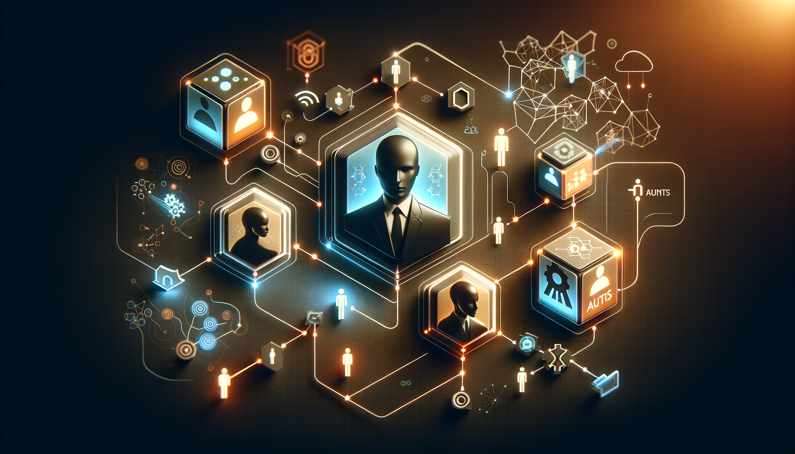
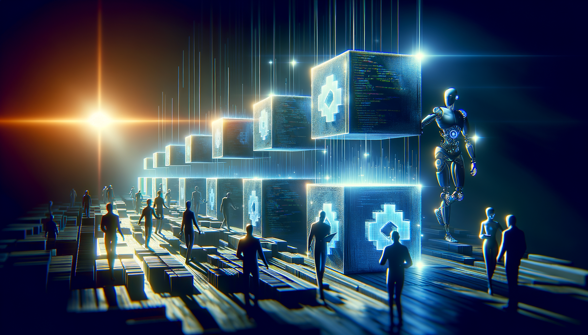
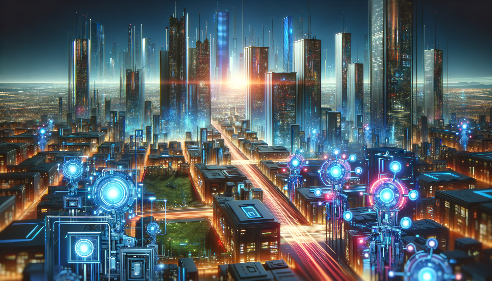

Discover how AI is transforming from single-turn interactions to complex, multi-step processes that redefine efficiency and innovation.
Artificial Intelligence has come a long way from the days when interacting with it meant little more than feeding a single question into a black box and receiving a one-off answer. Today, the frontier of AI technology is evolving into a dynamic ecosystem where autonomous multi-step workflows — or "agentic workflows" — are taking center stage. These developments are paving the way for more intelligent, collaborative, and scalable AI systems that can conduct sophisticated tasks beyond our previous imaginations.
Agentic workflows represent a paradigm shift from traditional single-turn interactions. In simple terms, these workflows involve multiple AI agents interacting with one another, each with specific roles and responsibilities, working together to accomplish more complex and nuanced tasks. Imagine a team of chess players, each specializing in different strategies, collaborating to outmaneuver their opponent. This is the essence of a multi-agent system.
Traditional use of large language models (LLMs) often involves single-turn prompts where an AI model responds to individual queries without continuity or context. Conversely, agentic workflows allow for the enactment of continuous, multi-step processes. These are akin to a relay race where the baton — in this case, data or a task — is passed seamlessly from one AI agent to another until the goal is achieved.
AutoGen provides a robust framework for creating AI systems that can self-generate tasks and delegate them effectively among different agents. It acts as the nervous system in this ecosystem, ensuring that tasks are appropriately assigned and executed by the most suitable AI.
CrewAI acts as the hub of collaboration, enabling various AI agents to work in concert. This framework is especially valuable in scenarios requiring a high degree of coordination and synergy between agents, much like the crew of a sailing ship working harmoniously to navigate open waters.
LangGraph takes charge of the intricacies of language processing across multi-agent systems, offering sophisticated capabilities for semantic understanding and language generation. Think of it as a translator that ensures all team members, no matter their language, understand each other perfectly.
OpenDevin stands out by providing a versatile platform for developing and refining multi-agent systems. It serves as a sandbox for developers to craft and optimize complex workflows, streamlining the path from concept to implementation.
In the realm of data analysis, agentic workflows enable AI systems to perform comprehensive data examination autonomously. By employing multiple agents specializing in different facets of data processing — such as cleaning, visualizing, and interpreting data — organizations can achieve insights faster and more accurately.
Developers can leverage multi-agent systems to automate the tedious process of code refactoring. An agent might analyze existing code, another could suggest improvements, while a third implements those changes, all while maintaining best practices and code integrity.
In R&D, AI workflows can emulate the iterative process of human experimentation. Agents could autonomously propose hypotheses, conduct virtual experiments, and refine results, accelerating innovation and discovery.
Businesses stand to benefit greatly from agentic workflows in automating complex processes such as supply chain management, customer service, and financial forecasting. AI agents can work simultaneously across departments, ensuring processes are not only automated but optimized.
- Scalability: Multi-agent systems can handle larger and more complex tasks than traditional models.
- Reasoning and Decision Making: These systems enable deeper reasoning capabilities, allowing AI to make informed decisions rather than merely regurgitate information.
- Collaboration: The potential for collaboration between agents leads to more nuanced and effective problem-solving.
- Orchestration Complexity: Managing multiple agents requires sophisticated orchestration to ensure all components work in harmony.
- Cost: Implementing and maintaining such systems can be resource-intensive and costly.
- Debugging: The complexity of these systems can make troubleshooting and debugging significantly more challenging.
The shift towards autonomous multi-agent systems signifies more than a technological evolution; it represents a fundamental change in how we approach problem-solving and innovation. For developers, this opens up new avenues for creativity and efficiency in coding practices. Enterprises can look forward to more streamlined operations and enhanced decision-making processes.
The future of AI is undeniably agentic, with each agent bringing unique skills to the table, collaborating to tackle the complexities of our modern world. This transformation will not only redefine productivity and efficiency but also set the stage for groundbreaking advancements in AI-driven capabilities across industries. As we continue to explore and develop these multi-agent systems, we are not just building better AI; we are building a smarter, more interconnected future.